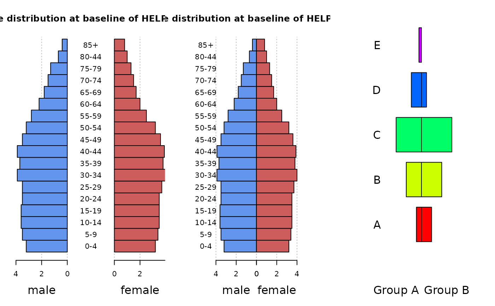

Draw a Back To Back Pyramid Plot
PlotPyramid.RdPyramid plots are a common way to display the distribution of age groups.
PlotPyramid(lx, rx = NA, ylab = "", ylab.x = 0, col = c("red", "blue"), border = par("fg"), main = "", lxlab = "", rxlab = "", xlim = NULL, gapwidth = NULL, xaxt = TRUE, args.grid = NULL, cex.axis = par("cex.axis"), cex.lab = par("cex.axis"), cex.names = par("cex.axis"), adj = 0.5, rev = FALSE, ...)
Arguments
| lx | either a vector or matrix of values describing the bars which make up the plot. If lx is a vector, it will be used to construct the left barplot. If lx is a matrix the first column will be plotted to the left side and the second to the right side. Other columsn are ignored. |
|---|---|
| rx | a vector with the values used to build the right barplot. lx and rx should be of equal length. |
| ylab | a vector of names to be plotted either in the middle or at the left side of the plot. If this argument is omitted, then the names are taken from the names attribute of lx if this is a vector. |
| ylab.x | the x-position of the y-labels. |
| col | the color(s) of the bars. If there are more than one the colors will be recycled. |
| border | the border color of the bars. Set this to |
| main | overall title for the plot. |
| lxlab | a label for the left x axis. |
| rxlab | a label for the right x axis. |
| xlim | limits for the x axis. The first value will determine the limit on the left, the second the one on the right. |
| gapwidth | the width of a gap in the middle of the plot. If set to 0, no gap will be plotted. Default is NULL which will make the gap as wide, as it is necessary to plot the longest ylab. |
| xaxt | a character which specifies the x axis type. Specifying "n" suppresses plotting of the axis. |
| args.grid | list of additional arguments for the grid. Set this argument to |
| cex.axis | expansion factor for numeric axis labels. |
| cex.lab | expansion factor for numeric variable labels. |
| cex.names | expansion factor for y labels (names). |
| adj | one or two values in [0, 1] which specify the x (and optionally y) adjustment of the labels. |
| rev | logical, if set to |
| ... | the dots are passed to the |
Details
Pyramid plots are a common way to display the distribution of age groups in a human population. The percentages of people within a given age category are arranged in a barplot, typically back to back. Such displays can be used to distinguish males vs. females, differences between two different countries or the distribution of age at different timepoints. The plot type can also be used to display other types of opposed bar charts with suitable modification of the arguments.
Value
A numeric vector giving the coordinates of all the bar midpoints drawn, useful for adding to the graph.
Author
Andri Signorell <andri@signorell.net>
See also
Examples
d.sda <- data.frame( kt_x = c("ZH","BL","ZG","SG","LU","AR","SO","GL","SZ", "NW","TG","UR","AI","OW","GR","BE","SH","AG", "BS","FR","GE","JU","NE","TI","VD","VS"), apo_n = c(18,16,13,11,9,12,11,8,9,8,11,9,7,9,24,19, 19,20,43,27,41,31,37,62,38,39), sda_n = c(235,209,200,169,166,164,162,146,128,127, 125,121,121,110,48,34,33,0,0,0,0,0,0,0,0,0) ) PlotPyramid(lx=d.sda[,c("apo_n","sda_n")], ylab=d.sda$kt_x, col=c("lightslategray", "orange2"), border = NA, ylab.x=0, xlim=c(-110,250), gapwidth = NULL, cex.lab = 0.8, cex.axis=0.8, xaxt = TRUE, lxlab="Drugstores", rxlab="General practitioners", main="Density of general practitioners and drugstores in CH (2010)", space=0.5, args.grid=list(lty=1))par(mfrow=c(1,3)) m.pop<-c(3.2,3.5,3.6,3.6,3.5,3.5,3.9,3.7,3.9,3.5, 3.2,2.8,2.2,1.8,1.5,1.3,0.7,0.4) f.pop<-c(3.2,3.4,3.5,3.5,3.5,3.7,4,3.8,3.9,3.6,3.2, 2.5,2,1.7,1.5,1.3,1,0.8) age <- c("0-4","5-9","10-14","15-19","20-24","25-29", "30-34","35-39","40-44","45-49","50-54", "55-59","60-64","65-69","70-74","75-79","80-44","85+") PlotPyramid(m.pop, f.pop, ylab = age, space = 0, col = c("cornflowerblue", "indianred"), main="Age distribution at baseline of HELP study", lxlab="male", rxlab="female" ) PlotPyramid(m.pop, f.pop, ylab = age, space = 0, col = c("cornflowerblue", "indianred"), xlim=c(-5,5), main="Age distribution at baseline of HELP study", lxlab="male", rxlab="female", gapwidth=0, ylab.x=-5 ) PlotPyramid(c(1,3,5,2,0.5), c(2,4,6,1,0), ylab = LETTERS[1:5], space = 0.3, col = rep(rainbow(5), each=2), xlim=c(-10,10), args.grid=NA, cex.names=1.5, adj=1, lxlab="Group A", rxlab="Group B", gapwidth=0, ylab.x=-8, xaxt="n")